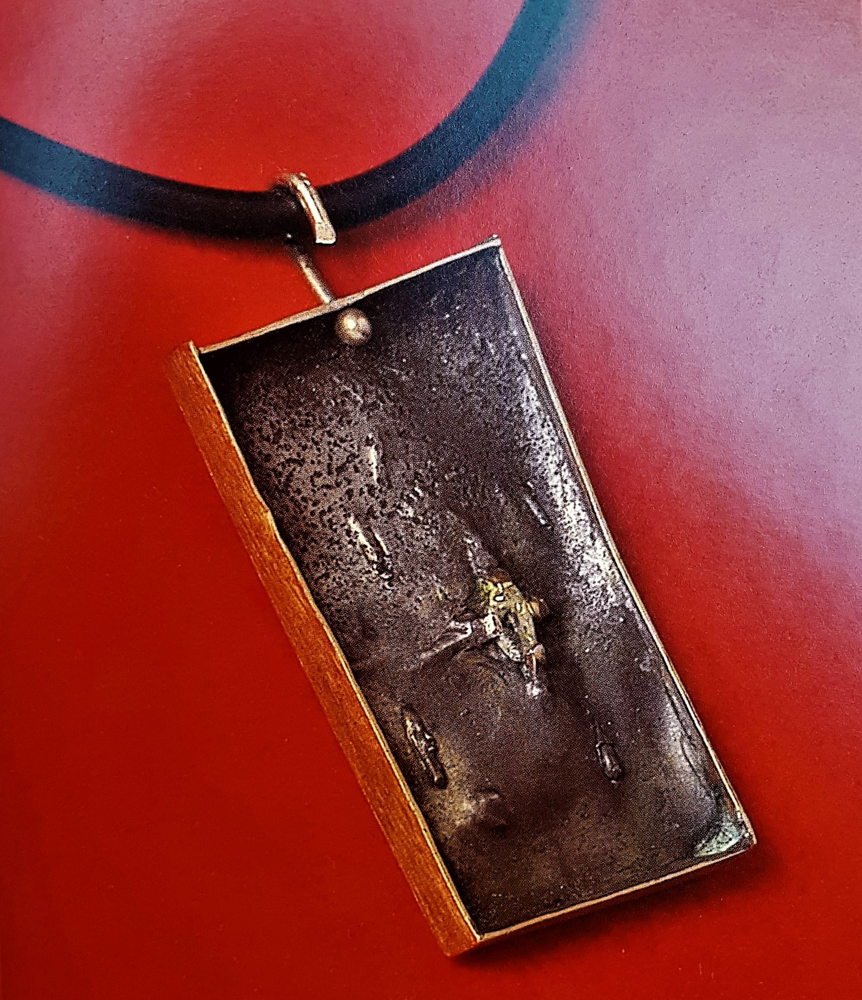

gioielli
Attilio Pierelli comincia a dedicarsi ai gioielli già sul finire degli anni Cinquanta, ma sarà solo a partire dagli anni Sessanta che lo scultore comincerà a dedicarsi sistematicamente alla loro creazione, riproponendo e sperimentando tutte quelle forme e quei concetti tipici della sua scultura, e rivelando così un aspetto totalmente nuovo e complementare della sua arte.

Pendente, 1957, argento e oro; brillante, 4,3x2,4x0,4 cm; gr. 15, modellazione a cera; fusione; tecniche di banchetto Collana, 1965, oro; smeraldi, 11,7x8,2x2,1 cm; gr. 202,20, lastra; fusione; tecniche di banchetto
Collana, 1965, oro; smeraldi, 11,7x8,2x2,1 cm; gr. 202,20, lastra; fusione; tecniche di banchetto Collana, 1965, oro; brillanti, 12x6,6x1,8 cm; gr. 177, lastra; fusione; tecniche di banchetto
Collana, 1965, oro; brillanti, 12x6,6x1,8 cm; gr. 177, lastra; fusione; tecniche di banchetto Spilla, 1970, oro; perla, 2,9x2,9x1,9 cm; gr. 45, fusione; tecniche di banchetto
Spilla, 1970, oro; perla, 2,9x2,9x1,9 cm; gr. 45, fusione; tecniche di banchettoCome nelle sculture, anche nei gioielli l’incidenza luminosa viene enfatizzata dal variare del punto di vista e le immagini riflesse nelle forme intagliate subiscono un continuo mutamento, mentre i giochi di specularità e di trasparenze non fanno che amplificare ed enfatizzare il passaggio della luce.
 Spilla, 1973, oro; zaffiri cabochon, 8,4x3,3x0,7 cm; gr. 56, fusione; tecniche di banchetto
Spilla, 1973, oro; zaffiri cabochon, 8,4x3,3x0,7 cm; gr. 56, fusione; tecniche di banchetto Spilla, 1974, oro, 3,5x3,5x3,5 cm; gr. 10,5, lastra; tecniche di banchetto
Spilla, 1974, oro, 3,5x3,5x3,5 cm; gr. 10,5, lastra; tecniche di banchetto Spilla, 1978, oro, 2,9x2,6x0,3 cm; gr. 10, lastra; tecniche di banchetto
Spilla, 1978, oro, 2,9x2,6x0,3 cm; gr. 10, lastra; tecniche di banchetto Spilla, 1980, oro, 3,8x3,6 cm; gr. 15,5, lastra; tecniche di banchetto
Spilla, 1980, oro, 3,8x3,6 cm; gr. 15,5, lastra; tecniche di banchettoNel 1975 l’artista elabora un proprio taglio, il cosiddetto Taglio Pierelli, derivante dalla forma dell’Ipercubo e riproponente perciò, all’interno della pietra preziosa, una moltiplicazione spaziale delle superfici capace di raggiungere sorprendenti effetti di trasparenza. Ponendosi di fronte a tali gioielli si ha come l’impressione di potersi tuffare nell’iperspazio e di raggiungere, in uno stato quasi ipnotico, la quarta dimensione.
 Bracciale, 1985, oro; quarzo ialino, Taglio Pierelli triangolo icosaedro, 5,9x5,7x2,0 cm; gr. 55, tecniche di banchetto
Bracciale, 1985, oro; quarzo ialino, Taglio Pierelli triangolo icosaedro, 5,9x5,7x2,0 cm; gr. 55, tecniche di banchetto Spilla, 1985, oro e platino; rubino, 4,3x4,3x1,7 cm; gr. 38,5, lastra; fusione; tecniche di banchetto
Spilla, 1985, oro e platino; rubino, 4,3x4,3x1,7 cm; gr. 38,5, lastra; fusione; tecniche di banchetto Pendente, 1986, oro e quarzo, Taglio Pierelli Ipercubo, 3,5x3,2x0,85 cm; gr. 33,5, lastra; fusione; tecniche di banchetto
Pendente, 1986, oro e quarzo, Taglio Pierelli Ipercubo, 3,5x3,2x0,85 cm; gr. 33,5, lastra; fusione; tecniche di banchetto Anello, 1986, oro; quarzo ialino; Taglio Pierelli triangolo ottaedro, 2,8x1,8x1,8 cm; gr. 18, fusione; tecniche di banchetto
Anello, 1986, oro; quarzo ialino; Taglio Pierelli triangolo ottaedro, 2,8x1,8x1,8 cm; gr. 18, fusione; tecniche di banchettoPer la creazione di altri pezzi contemporanei l’artista decise invece di ispirarsi a T.E.S.T. (Trascinamento di Eventi Spazio Temporali), riproducendola sia in bronzo nichelato che sotto forma d’orecchini, traducendo con estrema eleganza quell’ormai famosa linea curva in continuo divenire.
 Orecchini, 1987, oro, 2,7x2,1x0,9 cm; gr. 13, modellazione a cera; fusione; tecniche di banchetto
Orecchini, 1987, oro, 2,7x2,1x0,9 cm; gr. 13, modellazione a cera; fusione; tecniche di banchetto Medaglione T.e.s.t., 1988, argento e oro; smeraldo, 5,3x5,1x1,3 cm; gr. 35, modellazione a cera; fusione; tecniche di banchetto
Medaglione T.e.s.t., 1988, argento e oro; smeraldo, 5,3x5,1x1,3 cm; gr. 35, modellazione a cera; fusione; tecniche di banchetto Pendente, 1992, oro; quarzo ialino, Taglio Pierelli clessidra, 3,4x3,4x1,2 cm; gr. 39, fusione; tecniche di banchetto
Pendente, 1992, oro; quarzo ialino, Taglio Pierelli clessidra, 3,4x3,4x1,2 cm; gr. 39, fusione; tecniche di banchetto Pendente, 1995-97, oro; cristallo di rocca, Taglio Pierelli cubo ottaedro, 5,85x1,9x1,05 cm; gr. 27, fusione; tecniche di laboratorio
Pendente, 1995-97, oro; cristallo di rocca, Taglio Pierelli cubo ottaedro, 5,85x1,9x1,05 cm; gr. 27, fusione; tecniche di laboratorioCosì, tutte quelle entità macroscopiche dell’universo, tutt'oggi ancora estranee alla nostra comprensione, e che vennero indagate e tradotte da Pierelli nella sua scultura, verranno da lui stesso successivamente ridotte, materializzandosi quasi per magia, nella preziosa “dimensione” del gioiello.
 Pendente, 1996, oro e quarzo citrino, Taglio Pierelli pentagono dodecaedro, 4,7x3,8x1,1 cm; gr. 37, lastra; fusione; tecniche di banchetto
Pendente, 1996, oro e quarzo citrino, Taglio Pierelli pentagono dodecaedro, 4,7x3,8x1,1 cm; gr. 37, lastra; fusione; tecniche di banchetto Anello, 1996, oro; quarzo ialino, Taglio Pierelli Ipercubo, 2,8x2,1x2,1 cm; gr. 28, fusione; tecniche di banchetto
Anello, 1996, oro; quarzo ialino, Taglio Pierelli Ipercubo, 2,8x2,1x2,1 cm; gr. 28, fusione; tecniche di banchetto Bracciale, 1997, oro; cristallo di rocca, Taglio Pierelli cubo ottaedro, 6,5x5,4x1,4 cm; gr. 48, fusione; tecniche di banchetto
Bracciale, 1997, oro; cristallo di rocca, Taglio Pierelli cubo ottaedro, 6,5x5,4x1,4 cm; gr. 48, fusione; tecniche di banchetto Anello, 1997, oro; quarzo ialino, Taglio Pierelli cubo ottaedro, 2,6x2,1x1,4 cm; gr. 14, modellazione a cera; fusione; tecniche di banchetto
Anello, 1997, oro; quarzo ialino, Taglio Pierelli cubo ottaedro, 2,6x2,1x1,4 cm; gr. 14, modellazione a cera; fusione; tecniche di banchettoTutti i gioielli creati da Pierelli vennero presentati in maniera organica e completa al pubblico nella mostra curata da Anna Imponente Ruffini Sculture Preziose. L’esposizione ebbe luogo dal dicembre del 2003 al maggio del 2004 a L’Aquila, presso il Museo Nazionale d’Abruzzo.
 Orecchini con pendenti, 1997, oro; quarzo ialino, Taglio Pierelli cubo ottaedro, 4,7x1,2x1,2 cm; gr. 20, modellazione a cera; fusione; tecniche di banchetto
Orecchini con pendenti, 1997, oro; quarzo ialino, Taglio Pierelli cubo ottaedro, 4,7x1,2x1,2 cm; gr. 20, modellazione a cera; fusione; tecniche di banchetto [Particolare] Orecchini con pendenti, 1997, oro; quarzo ialino, Taglio Pierelli cubo ottaedro, 4,7x1,2x1,2 cm; gr. 20, modellazione a cera; fusione; tecniche di banchetto
[Particolare] Orecchini con pendenti, 1997, oro; quarzo ialino, Taglio Pierelli cubo ottaedro, 4,7x1,2x1,2 cm; gr. 20, modellazione a cera; fusione; tecniche di banchetto Orecchini, 1997, oro; cristallo di rocca, Taglio Pierelli cubo ottaedro, 2,3x1,4x2 cm; gr. 21,5, modellazione a cera; fusione; tecniche di banchetto
Orecchini, 1997, oro; cristallo di rocca, Taglio Pierelli cubo ottaedro, 2,3x1,4x2 cm; gr. 21,5, modellazione a cera; fusione; tecniche di banchetto Orecchini, 1997, oro; acqua marina, Taglio Pierelli triangolo icosaedro, 3,4x3,4x0,8 cm; gr. 26, tecniche di laboratorio
Orecchini, 1997, oro; acqua marina, Taglio Pierelli triangolo icosaedro, 3,4x3,4x0,8 cm; gr. 26, tecniche di laboratorio Anello, 1998, oro; quarzo ialino, Taglio Pierelli triangolo ottaedro, 2,5x2,4x1,6 cm; gr. 22, lastra; tecniche di banchetto
Anello, 1998, oro; quarzo ialino, Taglio Pierelli triangolo ottaedro, 2,5x2,4x1,6 cm; gr. 22, lastra; tecniche di banchetto